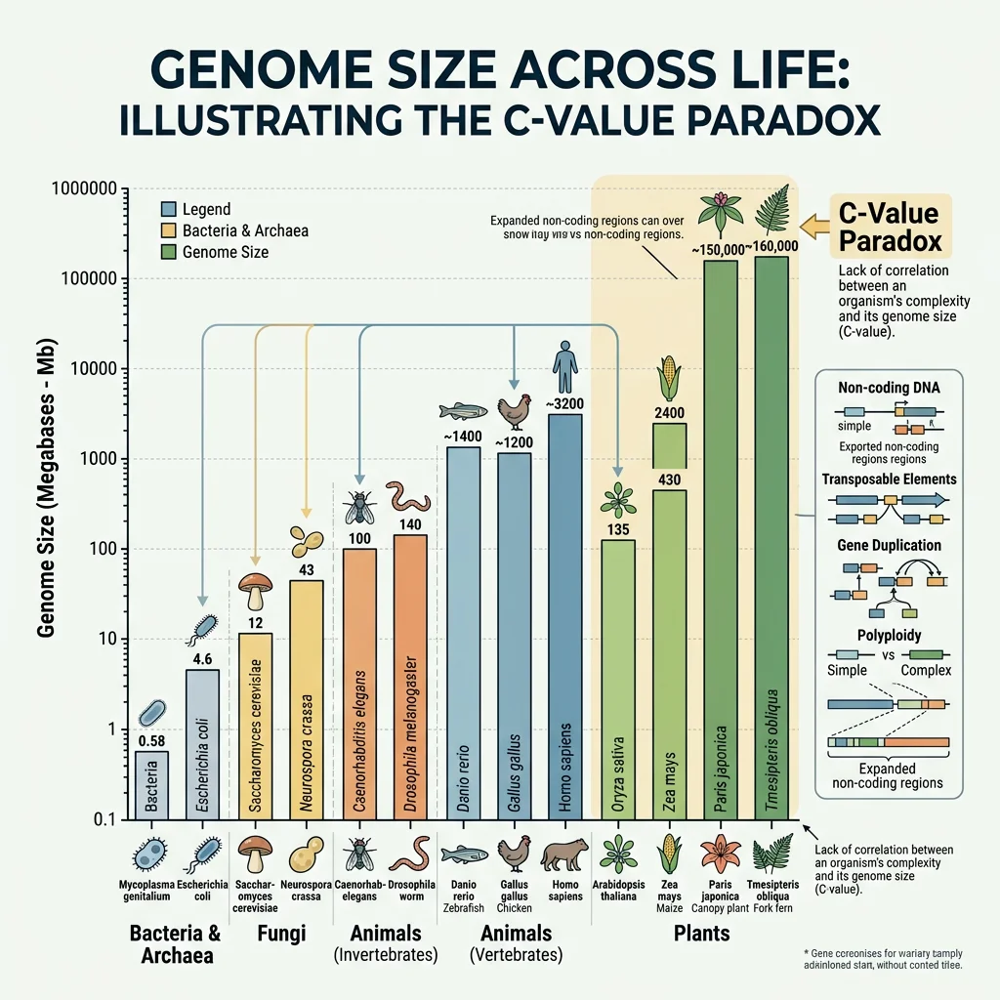
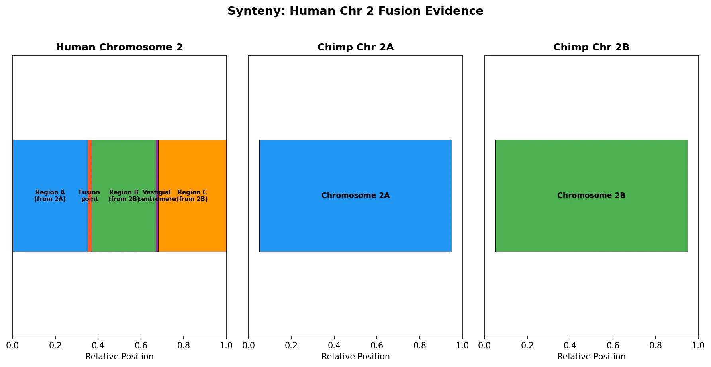
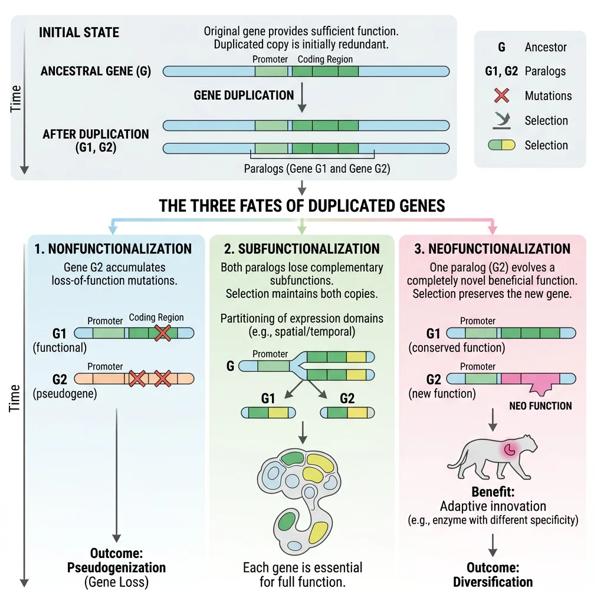
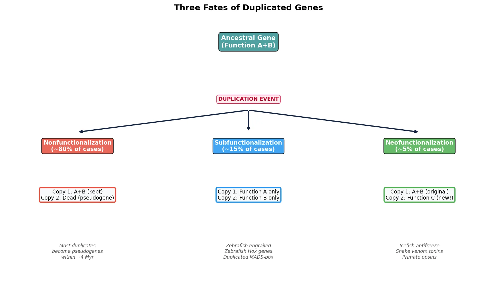
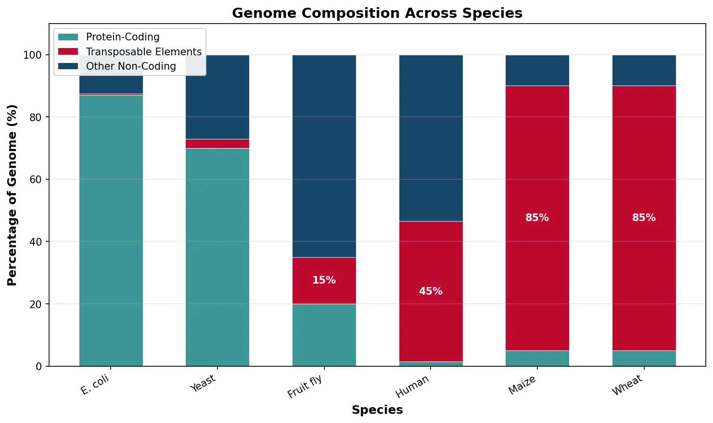
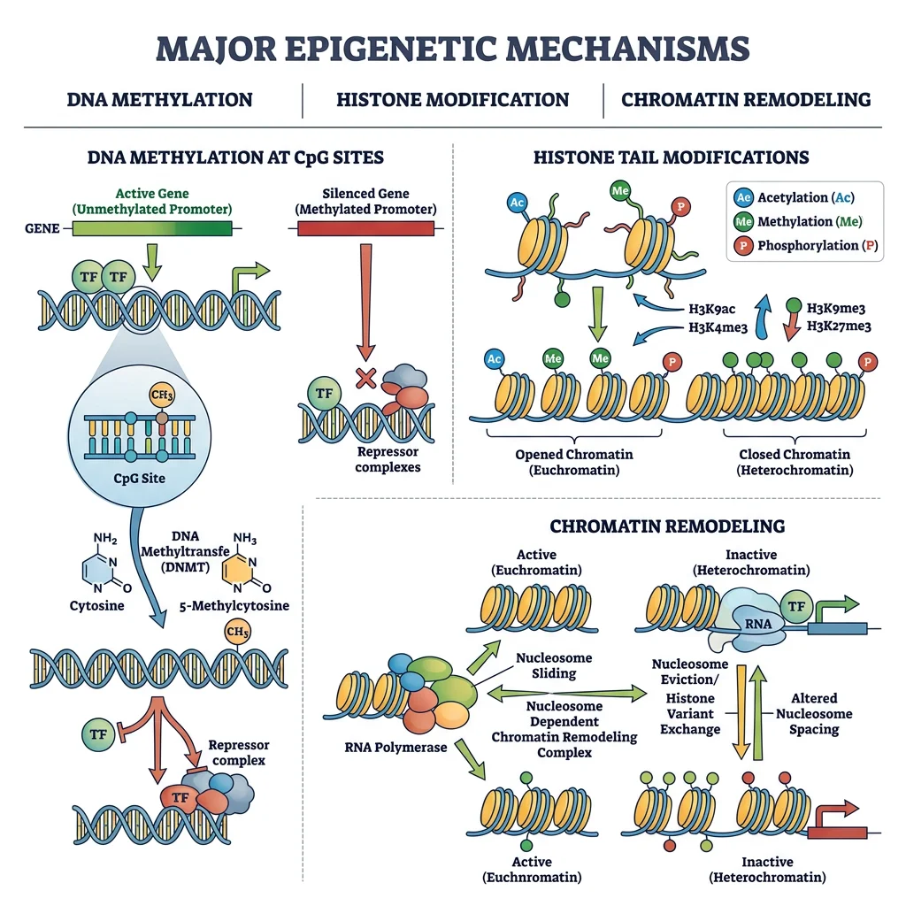
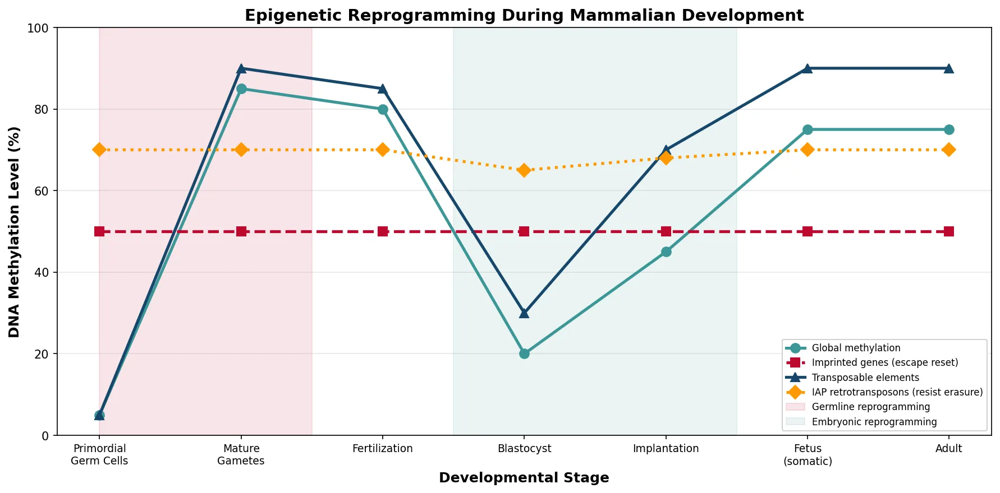
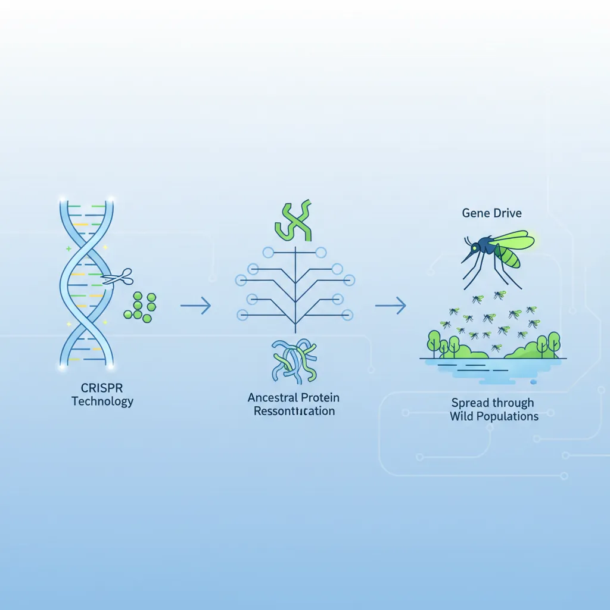
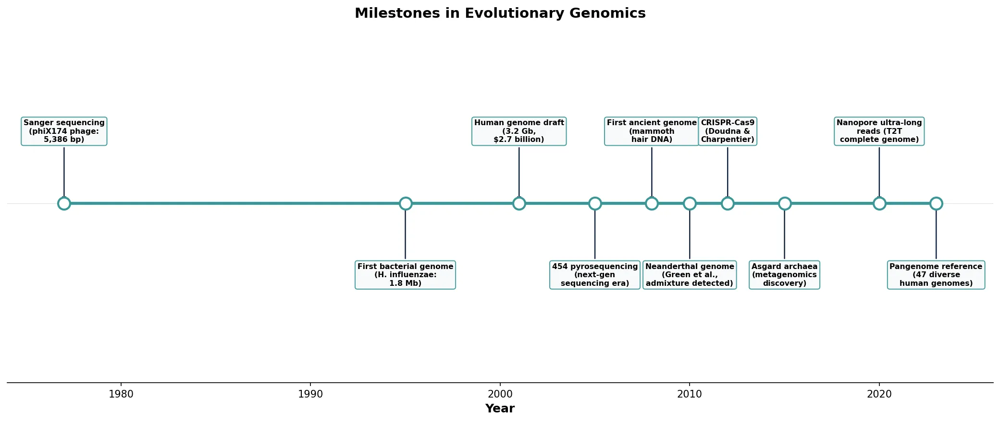

Evolutionary Biology Mastery
Darwin, Wallace & Natural Selection
Foundations, selection types, inclusive fitness, trade-offsGenetics of Evolution
DNA, population genetics, Hardy-Weinberg, molecular clocksSpeciation & Adaptive Radiation
Species concepts, reproductive isolation, rapid diversificationPhylogenetics & Taxonomy
Tree thinking, cladistics, molecular phylogenetics, classificationHuman Evolution & Migration
Hominin lineage, fossil evidence, Neanderthals, cultural evolutionCo-evolution & Symbiosis
Arms races, host-parasite, endosymbiosis, holobiontMass Extinctions & Biodiversity
Big Five extinctions, biodiversity patterns, conservationEvolutionary Developmental Biology
Hox genes, morphological innovation, heterochronyBehavioral & Social Evolution
Cooperation, game theory, sexual strategies, social insectsMathematical & Theoretical Evolution
Fitness landscapes, adaptive dynamics, ESS, selection modelsPaleontology & Fossil Interpretation
Radiometric dating, transitional fossils, taphonomyEvolutionary Genomics
Comparative genomics, gene duplication, HGT, epigeneticsComparative Genomics
The ability to read and compare entire genomes has transformed evolutionary biology from a discipline of inference to one of direct observation. Comparative genomics allows us to quantify evolutionary relationships at the nucleotide level, identify functional elements preserved across hundreds of millions of years, and trace the chromosomal rearrangements that accompany speciation. Think of genomes as ancient manuscripts — by comparing different copies, we can reconstruct the original text and identify where scribes made changes, insertions, and deletions.

Genome Structure Comparisons
Genome sizes vary enormously across life, from the ~580 kb genome of Mycoplasma genitalium to the 150 billion bp genome of the marbled lungfish Protopterus aethiopicus. Remarkably, genome size does not correlate with organismal complexity — the so-called C-value paradox. Much of this variation reflects differences in non-coding DNA, transposable element content, and polyploidy events rather than gene number.
| Organism | Genome Size (Mb) | Genes (~) | Coding (%) | Repeat Content (%) |
|---|---|---|---|---|
| E. coli | 4.6 | 4,300 | 87% | <1% |
| S. cerevisiae (yeast) | 12 | 6,000 | 70% | 3% |
| C. elegans (nematode) | 100 | 20,000 | 27% | 17% |
| D. melanogaster (fruit fly) | 180 | 14,000 | 20% | 15% |
| Homo sapiens | 3,200 | 20,000 | 1.5% | 45% |
| Triticum aestivum (wheat) | 17,000 | 107,000 | <5% | 85% |
| Paris japonica (plant) | 149,000 | ~25,000 | <1% | >90% |
The human genome, at ~3.2 billion bp, contains only about 20,000 protein-coding genes — roughly the same as the nematode C. elegans. The difference in complexity lies not in gene number but in regulatory complexity: alternative splicing, non-coding RNAs, chromatin organization, and gene regulatory networks.
Conserved Regions
When sequences are preserved across distantly related species despite millions of years of mutation, selection must be actively maintaining them. These conserved elements represent the functional core of genomes — the "dark matter" that was once dismissed as junk DNA but is now recognized as housing critical regulatory information.
Ultraconserved elements (UCEs) are genomic segments of 200+ bp that are 100% identical between human, mouse, and rat — a level of conservation far exceeding what would be expected by chance over ~90 million years of independent evolution. Over 481 UCEs were identified by Bejerano et al. (2004), many located in gene deserts near developmental transcription factors.
Ultraconserved Elements in the Human Genome
Bejerano and colleagues identified 481 segments longer than 200 bp that are absolutely conserved (100% identity) between human, mouse, and rat. These elements are strongly conserved in chicken and dog, with some detectable in fish. Most are non-coding and cluster near genes involved in RNA processing and transcription regulation. The extreme conservation suggests powerful, yet poorly understood, purifying selection — mutation in these regions is apparently lethal or severely deleterious.
The ENCODE Project (Encyclopedia of DNA Elements) found that approximately 80% of the human genome has at least one biochemical function — though this claim remains controversial. What is widely accepted is that cross-species conservation provides the most reliable indicator of functional importance. The comparative approach has revealed:
- Enhancers — distant regulatory elements that can be millions of bp from their target genes
- Long non-coding RNAs (lncRNAs) — transcribed sequences with regulatory roles, some conserved across vertebrates
- miRNA binding sites — short conserved motifs in 3' UTRs that regulate post-transcriptional gene silencing
- Splice regulatory elements — intronic and exonic sequences that control alternative splicing patterns
Synteny
Synteny refers to the conservation of gene order along chromosomes between species. When blocks of genes remain in the same order and orientation across species, it suggests their chromosomal arrangement has been preserved since the last common ancestor. Breaks in synteny indicate chromosomal rearrangements — inversions, translocations, fusions, or fissions — that occurred during speciation.
Comparative synteny mapping between human and mouse reveals approximately 280 conserved syntenic blocks, meaning that while large-scale rearrangements have occurred, the relative order of genes within blocks has been remarkably stable over ~90 million years. The larger the syntenic block, the slower the rate of chromosomal breakage in that region — suggesting that some chromosomal architectures are maintained by natural selection.
import matplotlib.pyplot as plt
import matplotlib.patches as mpatches
import numpy as np
# Simplified synteny comparison: Human chr 2 vs Chimp chr 2A + 2B
fig, axes = plt.subplots(1, 3, figsize=(12, 6))
# Human chromosome 2
ax1 = axes[0]
regions_h = [
(0, 0.35, '#2196F3', 'Region A\n(from 2A)'),
(0.35, 0.02, '#FF5722', 'Fusion\npoint'),
(0.37, 0.30, '#4CAF50', 'Region B\n(from 2B)'),
(0.67, 0.01, '#9C27B0', 'Vestigial\ncentromere'),
(0.68, 0.32, '#FF9800', 'Region C\n(from 2B)')
]
for start, height, color, label in regions_h:
ax1.barh(0, height, left=start, height=0.4,
color=color, edgecolor='black', linewidth=0.5)
ax1.text(start + height/2, 0, label,
ha='center', va='center', fontsize=7, fontweight='bold')
ax1.set_xlim(0, 1)
ax1.set_ylim(-0.5, 0.5)
ax1.set_title('Human Chromosome 2', fontweight='bold')
ax1.set_yticks([])
ax1.set_xlabel('Relative Position')
# Chimp chromosome 2A
ax2 = axes[1]
ax2.barh(0, 0.9, left=0.05, height=0.4,
color='#2196F3', edgecolor='black', linewidth=0.5)
ax2.text(0.5, 0, 'Chromosome 2A', ha='center',
va='center', fontsize=9, fontweight='bold')
ax2.set_xlim(0, 1)
ax2.set_ylim(-0.5, 0.5)
ax2.set_title('Chimp Chr 2A', fontweight='bold')
ax2.set_yticks([])
ax2.set_xlabel('Relative Position')
# Chimp chromosome 2B
ax3 = axes[2]
ax3.barh(0, 0.9, left=0.05, height=0.4,
color='#4CAF50', edgecolor='black', linewidth=0.5)
ax3.text(0.5, 0, 'Chromosome 2B', ha='center',
va='center', fontsize=9, fontweight='bold')
ax3.set_xlim(0, 1)
ax3.set_ylim(-0.5, 0.5)
ax3.set_title('Chimp Chr 2B', fontweight='bold')
ax3.set_yticks([])
ax3.set_xlabel('Relative Position')
fig.suptitle('Synteny: Human Chr 2 Fusion Evidence',
fontsize=14, fontweight='bold', y=1.02)
plt.tight_layout()
plt.savefig('chr2_fusion_synteny.png', dpi=150,
bbox_inches='tight')
plt.show()

Population Genomics
Population genomics applies genome-wide data to study variation within species — how allele frequencies shift across populations, how natural selection sculpts different regions of the genome, and how demographic history (bottlenecks, migrations, admixture) leaves detectable signatures in DNA. While comparative genomics compares between species, population genomics zooms in on the evolutionary processes happening right now.
| Approach | What It Detects | Key Metric | Example Application |
|---|---|---|---|
| Selection scans | Regions under recent positive selection | FST, iHS, XP-EHH | Lactase persistence (LCT locus) in pastoralist populations |
| GWAS | Variants associated with phenotypic traits | p-value, effect size, PRS | Height, disease risk, skin pigmentation across latitudes |
| Demographic inference | Population size changes, splits, migration | PSMC, SFS, coalescent models | Out-of-Africa bottleneck ~70 Kya, Neanderthal admixture |
| Landscape genomics | Genotype–environment associations | Redundancy analysis, latent factors | Altitude adaptation in Tibetan and Andean populations |
The 1000 Genomes Project (2008–2015) was a landmark effort that catalogued over 88 million genetic variants across 2,504 individuals from 26 global populations. It revealed that any two humans differ at roughly 4–5 million genomic positions (~0.1% of the genome), and that the vast majority of human genetic diversity exists within populations rather than between them — reinforcing the biological meaninglessness of traditional "racial" categories. More recently, the Human Pangenome Reference (2023) constructed a graph-based genome from 47 diverse individuals, capturing structural variants that the original single linear reference genome missed entirely.
Gene Duplication & Genome Evolution
Susumu Ohno proposed in his landmark 1970 book Evolution by Gene Duplication that gene duplication is the primary mechanism through which new gene functions arise. Without duplication, genes are constrained by their current function — any mutation that improves a new function would likely damage the original. Duplication liberates one copy to explore new functional space while the other maintains the ancestral role. Think of it as a safety net for evolutionary experimentation: you can only try risky new trapeze moves if there's a net below.

Whole Genome Duplication
Whole genome duplication (WGD), or polyploidy, is the simultaneous duplication of an entire genome. While seemingly catastrophic, WGD events have been pivotal in the evolution of major lineages. Two rounds of WGD (the "2R hypothesis") occurred at the base of vertebrate evolution, and an additional teleost-specific WGD (3R) preceded the explosive diversification of ray-finned fishes — the most species-rich vertebrate group with over 30,000 species.
| WGD Event | Timing (Mya) | Lineage | Consequence |
|---|---|---|---|
| 1R (first round) | ~500 | Early vertebrates | Expansion of Hox clusters (1→2), neural crest development genes |
| 2R (second round) | ~450 | Jawed vertebrates | Four Hox clusters, adaptive immune system genes, complex body plans |
| 3R (teleost) | ~320 | Ray-finned fishes | Duplicated pigmentation genes, diverse jaw morphologies, 30K+ species |
| Salmonid WGD | ~80 | Salmon & trout | Retained duplicate genes for anadromy, cold adaptation |
| Angiosperm α-WGD | ~120 | Core eudicots | Duplicated floral identity genes (MADS-box), fruit diversity |
| Saccharomyces WGD | ~100 | Budding yeast | Enhanced fermentation capacity through retained glycolytic gene pairs |
Two Rounds of Whole Genome Duplication in Vertebrate Ancestry (2R Hypothesis)
By analyzing the human genome for paralogous gene quartets — sets of four related genes distributed across different chromosomes — Dehal and Boore provided strong evidence for two ancient WGD events at the base of the vertebrate lineage. The four human Hox clusters (HOXA, HOXB, HOXC, HOXD), each on a different chromosome, represent the clearest example: a single ancestral Hox cluster was duplicated twice. These duplications provided the raw material for vertebrate innovations including the adaptive immune system, complex neural development, and the diverse body plans that characterize vertebrates.
Subfunctionalization
After duplication, the most common fate is subfunctionalization — a process by which each duplicate retains a subset of the ancestral gene's functions. Neither copy alone can perform all original duties; both become essential. This occurs through the accumulation of complementary degenerative mutations in regulatory or coding regions.
The Duplication-Degeneration-Complementation (DDC) model (Force et al. 1999) formalizes this process:
- Duplication — Gene A is duplicated, producing copies A1 and A2
- Degeneration — Each copy accumulates loss-of-function mutations in different regulatory elements
- Complementation — Together, A1 + A2 still cover all ancestral expression domains; both are preserved by selection
Neofunctionalization
Neofunctionalization is the more dramatic (and rarer) outcome of gene duplication: one copy acquires a genuinely new function through beneficial mutations, while the other retains the ancestral role. This is Ohno's original vision — gene duplication as the primary engine of evolutionary novelty.
Classic examples of neofunctionalization include:
- Antarctic icefish antifreeze proteins — Derived from a duplicated pancreatic trypsinogen gene; the new copy acquired ice-crystal binding ability, enabling survival in sub-zero waters
- Primate color vision — Duplication of an opsin gene on the X chromosome, followed by spectral tuning mutations, gave Old World primates trichromatic vision (red-green discrimination)
- Snake venom genes — Many venom toxins evolved from duplicated housekeeping genes (phospholipases, serine proteases, metalloproteinases) that acquired toxic properties
- Hemoglobin & myoglobin — Ancient duplication of a single globin gene led to hemoglobin (blood oxygen transport) and myoglobin (muscle oxygen storage) — two related but functionally distinct proteins
Antarctic Icefish Antifreeze from a Trypsinogen Ancestor
Chen, DeVries, and Cheng discovered that the antifreeze glycoprotein (AFGP) gene of Antarctic notothenioid fish evolved from a duplicated trypsinogen gene. A short Thr-Ala-Ala repeat within trypsinogen was amplified and recruited to create the antifreeze function, while the original trypsinogen copy maintained its digestive enzyme role. This occurred ~5-14 million years ago as Antarctica cooled and the Southern Ocean froze, providing one of the clearest examples of neofunctionalization driven by environmental change.
import matplotlib.pyplot as plt
import matplotlib.patches as mpatches
import numpy as np
# Visualize fates of duplicated genes
fig, ax = plt.subplots(figsize=(12, 7))
# Gene duplication tree
# Ancestral gene
ax.annotate('Ancestral Gene\n(Function A+B)',
xy=(0.5, 0.95), fontsize=11,
fontweight='bold', ha='center',
bbox=dict(boxstyle='round,pad=0.4',
facecolor='#3B9797', edgecolor='black',
alpha=0.9),
color='white')
# Duplication event
ax.annotate('DUPLICATION EVENT',
xy=(0.5, 0.78), fontsize=9,
fontweight='bold', ha='center',
color='#BF092F',
bbox=dict(boxstyle='round', facecolor='#fff0f0',
edgecolor='#BF092F'))
# Draw branches
ax.annotate('', xy=(0.15, 0.68), xytext=(0.5, 0.75),
arrowprops=dict(arrowstyle='->', lw=2,
color='#132440'))
ax.annotate('', xy=(0.5, 0.68), xytext=(0.5, 0.75),
arrowprops=dict(arrowstyle='->', lw=2,
color='#132440'))
ax.annotate('', xy=(0.85, 0.68), xytext=(0.5, 0.75),
arrowprops=dict(arrowstyle='->', lw=2,
color='#132440'))
# Three fates
fates = [
(0.15, 'Nonfunctionalization\n(~80% of cases)',
'Copy 1: A+B (kept)\nCopy 2: Dead (pseudogene)',
'#E74C3C'),
(0.50, 'Subfunctionalization\n(~15% of cases)',
'Copy 1: Function A only\nCopy 2: Function B only',
'#2196F3'),
(0.85, 'Neofunctionalization\n(~5% of cases)',
'Copy 1: A+B (original)\nCopy 2: Function C (new!)',
'#4CAF50')
]
for x, title, desc, color in fates:
ax.annotate(title, xy=(x, 0.62), fontsize=10,
fontweight='bold', ha='center',
bbox=dict(boxstyle='round,pad=0.3',
facecolor=color, edgecolor='black',
alpha=0.85),
color='white')
ax.text(x, 0.48, desc, fontsize=9, ha='center',
va='center',
bbox=dict(boxstyle='round,pad=0.3',
facecolor='#F8F9FA',
edgecolor=color, linewidth=2))
# Examples
examples = [
(0.15, 'Most duplicates\nbecome pseudogenes\nwithin ~4 Myr'),
(0.50, 'Zebrafish engrailed\nZebrafish Hox genes\nDuplicated MADS-box'),
(0.85, 'Icefish antifreeze\nSnake venom toxins\nPrimate opsins')
]
for x, text in examples:
ax.text(x, 0.30, text, fontsize=8, ha='center',
va='center', style='italic', color='#555')
ax.set_xlim(0, 1)
ax.set_ylim(0.2, 1.05)
ax.axis('off')
ax.set_title('Three Fates of Duplicated Genes',
fontsize=14, fontweight='bold', pad=10)
plt.tight_layout()
plt.savefig('gene_duplication_fates.png', dpi=150,
bbox_inches='tight')
plt.show()

Horizontal Gene Transfer
Darwin envisioned evolution as a branching tree — lineages diverge but never merge. Horizontal gene transfer (HGT) challenges this model fundamentally. Instead of a tree, microbial evolution resembles a web of life or network, where genes move laterally between unrelated organisms. What was once thought to be a rare curiosity is now recognized as a dominant force shaping prokaryotic genomes and a surprisingly common phenomenon in eukaryotes as well.
HGT in Prokaryotes
In prokaryotes, HGT is so pervasive that some biologists argue the traditional species concept barely applies. Three primary mechanisms mediate HGT in bacteria and archaea:
| Mechanism | Vector | DNA Type | Range | Example |
|---|---|---|---|---|
| Transformation | Free DNA uptake | Fragments from lysed cells | Close relatives (usually) | Streptococcus pneumoniae — Griffith's 1928 experiment |
| Transduction | Bacteriophages | Phage-packaged host DNA | Phage host range | Cholera toxin genes carried by CTXϕ phage |
| Conjugation | Pilus / direct contact | Plasmids, ICEs | Broad (even cross-kingdom) | F-plasmid transfer, antibiotic resistance spread |
| Gene Transfer Agents | Phage-like particles | Random host DNA fragments | Species-specific | Rhodobacter capsulatus GTA |
The scale of prokaryotic HGT is staggering. Studies of E. coli suggest that up to 18% of its genome has been acquired by HGT since divergence from the Salmonella lineage ~100 Mya. The "pan-genome" concept captures this reality: the E. coli pan-genome contains over 18,000 gene families, while any individual strain has only ~4,300 genes. The core genome (shared by all strains) comprises just ~2,000 genes.
MCR-1: Plasmid-Mediated Colistin Resistance
In 2015, Liu and colleagues discovered mcr-1, a gene conferring resistance to colistin — the antibiotic of last resort against multidrug-resistant Gram-negative bacteria. The gene was located on a conjugative plasmid, meaning it could transfer between bacterial species during conjugation. First identified in livestock E. coli in China, MCR-1 spread to human clinical isolates on five continents within two years, demonstrating HGT's capacity to disseminate dangerous traits at alarming speed. This discovery raised the spectre of truly pan-resistant "superbugs."
HGT Signatures in Eukaryotes
While HGT was long assumed to be negligible in eukaryotes due to the germline-soma barrier in multicellular organisms, mounting evidence has revealed its surprising prevalence:
- Endosymbiotic gene transfer (EGT) — Massive transfer of mitochondrial and chloroplast genes to the nuclear genome. The human nucleus contains ~2,000 genes of mitochondrial (α-proteobacterial) ancestry
- Bdelloid rotifers — These asexual animals have incorporated ~8% of their genes from bacteria, fungi, and plants — the highest known HGT rate in any animal
- Plant parasitism — The parasitic plant Striga acquired dozens of genes from its host grasses by direct transfer through the haustorium
- Insect-Wolbachia — Large fragments of the Wolbachia bacterial genome have been found integrated into insect chromosomes (e.g., Drosophila ananassae contains almost the entire Wolbachia genome)
- Human genome — ~8% of the human genome consists of endogenous retroviruses (ERVs) — viral sequences integrated into human germline DNA over millions of years. The syncytin genes, essential for placenta formation, were captured from retroviruses
Transposable Elements
Transposable elements (TEs) — often called "selfish DNA" or "jumping genes" — are mobile genetic elements that replicate within genomes. Barbara McClintock discovered them in maize in the 1940s, a finding so radical she was largely ignored until winning the Nobel Prize in 1983. TEs are the single largest component of many eukaryotic genomes: they constitute 45% of the human genome, 85% of the maize genome, and over 90% of some plant genomes.
| TE Class | Mechanism | Examples | Human Genome % | Evolutionary Impact |
|---|---|---|---|---|
| LINEs (Class I) | Copy-and-paste via RNA | LINE-1 (L1) | ~17% | Gene disruption, exon shuffling, X-inactivation |
| SINEs (Class I) | Parasitize LINE machinery | Alu elements | ~11% | Alu-mediated recombination, alternative splicing |
| LTR retrotransposons (Class I) | Copy-and-paste via RNA | ERVs, Ty1/copia | ~8% | Syncytin gene capture, immune gene regulation |
| DNA transposons (Class II) | Cut-and-paste | hAT, Mariner, P-elements | ~3% | V(D)J recombination origin, genome rearrangement |
| Helitrons (Class II) | Rolling-circle replication | Helitrons | <1% | Gene capture and shuffling in plants |
Discovery of Transposable Elements in Maize
Working with variegated maize kernels in the 1940s-50s, McClintock discovered that certain genetic elements — Activator (Ac) and Dissociation (Ds) — could move from one chromosomal position to another, causing mosaic color patterns in kernels. When Ds "jumped" out of a pigmentation gene, color was restored in that cell lineage. Her discovery that genes are not fixed on chromosomes challenged the static view of the genome and anticipated the explosive growth of transposon biology. She received the Nobel Prize in 1983, over three decades after her initial discoveries.
The evolutionary impact of TEs extends far beyond "selfish" replication. TEs have been co-opted by host genomes as raw material for evolutionary innovation:
- V(D)J recombination — The adaptive immune system's ability to generate antibody diversity evolved from an ancient DNA transposon (RAG transposase)
- Telomerase — The enzyme maintaining chromosome ends likely evolved from a retrotransposon reverse transcriptase
- Regulatory rewiring — TEs frequently carry transcription factor binding sites; their dispersal creates new regulatory networks (e.g., p53 binding sites spread by ERVs)
- Centromere evolution — Centromeric satellite DNA in many species is derived from ancient TE sequences
import matplotlib.pyplot as plt
import numpy as np
# Genome composition comparison across species
species = ['E. coli', 'Yeast', 'Fruit fly',
'Human', 'Maize', 'Wheat']
coding = [87, 70, 20, 1.5, 5, 5]
te_content = [0.5, 3, 15, 45, 85, 85]
other_non_coding = [12.5, 27, 65, 53.5, 10, 10]
fig, ax = plt.subplots(figsize=(10, 6))
x = np.arange(len(species))
width = 0.6
bars1 = ax.bar(x, coding, width, label='Protein-Coding',
color='#3B9797', edgecolor='white', linewidth=0.5)
bars2 = ax.bar(x, te_content, width, bottom=coding,
label='Transposable Elements',
color='#BF092F', edgecolor='white', linewidth=0.5)
bars3 = ax.bar(x, other_non_coding, width,
bottom=[c+t for c, t in zip(coding, te_content)],
label='Other Non-Coding',
color='#16476A', edgecolor='white', linewidth=0.5)
ax.set_xlabel('Species', fontsize=12, fontweight='bold')
ax.set_ylabel('Percentage of Genome (%)', fontsize=12,
fontweight='bold')
ax.set_title('Genome Composition Across Species',
fontsize=14, fontweight='bold')
ax.set_xticks(x)
ax.set_xticklabels(species, rotation=30, ha='right')
ax.legend(loc='upper left', framealpha=0.9)
ax.set_ylim(0, 110)
ax.grid(axis='y', alpha=0.3)
# Add TE% labels on bars
for i, (c, t) in enumerate(zip(coding, te_content)):
if t > 5:
ax.text(i, c + t/2, f'{t}%', ha='center',
va='center', fontweight='bold',
color='white', fontsize=10)
plt.tight_layout()
plt.savefig('genome_composition.png', dpi=150,
bbox_inches='tight')
plt.show()

Epigenetics & Inheritance
The Modern Synthesis defined inheritance as the transmission of DNA sequences from parent to offspring. Epigenetics challenges this framework by demonstrating that heritable changes in gene expression can occur without altering the underlying DNA sequence. Epigenetic marks — chemical modifications to DNA and its associated proteins — act as a layer of regulatory information "above" the genetic code. While most epigenetic marks are erased and reset between generations, some can persist, raising profound questions about the scope of evolutionary inheritance.

Epigenetic Modifications
Three primary epigenetic mechanisms regulate gene expression across eukaryotes:
| Mechanism | Target | Effect | Heritability | Key Example |
|---|---|---|---|---|
| DNA Methylation | Cytosine (CpG sites) | Gene silencing — blocks transcription factor binding | High (maintained by DNMT1) | X-inactivation, imprinting, TE silencing |
| Histone Modifications | Histone tails (H3K4, H3K27, etc.) | Acetylation → activation; Methylation → context-dependent | Moderate (Polycomb/Trithorax) | H3K27me3 silences Hox genes; H3K4me3 activates promoters |
| Non-coding RNAs | mRNA / chromatin | Post-transcriptional silencing, chromatin remodeling | Variable (piRNAs heritable) | Xist lncRNA coats inactive X; piRNAs silence TEs in germline |
Genomic imprinting is one of the most evolutionarily fascinating epigenetic phenomena. In imprinted genes, expression depends on parental origin: the maternal allele may be active while the paternal allele is silenced, or vice versa. Over 100 imprinted genes have been identified in mammals. The conflict hypothesis (Haig 1993) proposes that imprinting evolved from a tug-of-war between parental genomes: paternal genes favor maximal resource extraction from the mother (e.g., Igf2 — insulin-like growth factor 2 promotes fetal growth), while maternal genes counter this to preserve resources for future offspring (e.g., Igf2r — the receptor that degrades Igf2).
Transgenerational Inheritance
The question of whether epigenetic modifications can be transmitted across multiple generations — genuine transgenerational epigenetic inheritance (TEI) — remains one of the most contentious topics in evolutionary biology. Strict criteria require that the effect persist for at least the F3 generation (to rule out direct environmental exposure of the F1 embryo and F2 germ cells).
Parental Olfactory Fear Conditioning in Mice
Dias and Ressler trained male mice to associate the odor acetophenone with a mild foot shock. Remarkably, the F1 and F2 offspring of these trained males — who had never encountered the odor — showed enhanced sensitivity to acetophenone compared to other odors. The gene encoding the olfactory receptor for acetophenone (Olfr151) was hypomethylated in the sperm of trained males and the brains of their offspring, suggesting a methylation-based mechanism for intergenerational fear transmission. While controversial (replication attempts have yielded mixed results), this study ignited intense debate about the scope of epigenetic inheritance.
Better-established examples of TEI include:
- Dutch Hunger Winter (1944-45) — Offspring of mothers who experienced famine during pregnancy showed increased rates of cardiovascular disease, obesity, and epigenetic changes in IGF2 methylation detectable 60 years later
- Agouti viable yellow mouse — Maternal diet (methyl donors like folic acid) alters DNA methylation at an IAP retrotransposon upstream of Agouti, shifting offspring coat color from yellow (obese) to brown (lean) — a visible epigenetic effect transmitted to F2
- Caenorhabditis elegans — Small RNA-mediated gene silencing can persist for 3-5 generations in nematodes, providing the clearest mechanistic example of TEI in animals
- Plant paramutation — In maize, the b1 gene shows paramutation where one allele heritably silences a homologous allele through an RNA-directed DNA methylation mechanism; the silenced state persists indefinitely
Lamarckian Echoes
Does epigenetic inheritance vindicate Lamarck? The short answer is: partially, but with critical caveats. Lamarck proposed that organisms can pass on traits acquired during their lifetime — the giraffe stretches its neck to reach leaves, and its offspring inherit longer necks. This idea was thoroughly debunked as a general mechanism, but epigenetics has revealed specific cases where environmental experiences can indeed influence offspring phenotype.
The emerging field of Extended Evolutionary Synthesis (EES) incorporates epigenetic inheritance alongside niche construction, developmental plasticity, and other non-genetic inheritance channels as legitimate evolutionary mechanisms. The EES does not reject the Modern Synthesis but extends it to include:
- Inclusive inheritance — Genetic, epigenetic, behavioral, cultural, and ecological inheritance all contribute to phenotypic variation
- Constructive development — Organisms actively shape their own development and evolutionary trajectory
- Reciprocal causation — Evolution is not just gene → phenotype → selection, but involves feedback loops where phenotypes shape selective environments
import matplotlib.pyplot as plt
import numpy as np
# Visualize epigenetic reprogramming across generations
fig, ax = plt.subplots(figsize=(12, 6))
# Timeline positions
stages = ['Primordial\nGerm Cells',
'Mature\nGametes',
'Fertilization',
'Blastocyst',
'Implantation',
'Fetus\n(somatic)',
'Adult']
x = np.arange(len(stages))
# DNA methylation levels for different elements
global_methyl = [5, 85, 80, 20, 45, 75, 75]
imprinted = [50, 50, 50, 50, 50, 50, 50]
te_methyl = [5, 90, 85, 30, 70, 90, 90]
iap_elements = [70, 70, 70, 65, 68, 70, 70]
ax.plot(x, global_methyl, 'o-', color='#3B9797',
linewidth=2.5, markersize=8,
label='Global methylation')
ax.plot(x, imprinted, 's--', color='#BF092F',
linewidth=2.5, markersize=8,
label='Imprinted genes (escape reset)')
ax.plot(x, te_methyl, '^-', color='#16476A',
linewidth=2.5, markersize=8,
label='Transposable elements')
ax.plot(x, iap_elements, 'D:', color='#FF9800',
linewidth=2.5, markersize=8,
label='IAP retrotransposons (resist erasure)')
# Mark reprogramming windows
ax.axvspan(0, 1.5, alpha=0.1, color='#BF092F',
label='Germline reprogramming')
ax.axvspan(2.5, 4.5, alpha=0.1, color='#3B9797',
label='Embryonic reprogramming')
ax.set_xlabel('Developmental Stage', fontsize=12,
fontweight='bold')
ax.set_ylabel('DNA Methylation Level (%)', fontsize=12,
fontweight='bold')
ax.set_title('Epigenetic Reprogramming During Mammalian '
'Development', fontsize=14, fontweight='bold')
ax.set_xticks(x)
ax.set_xticklabels(stages, fontsize=9)
ax.set_ylim(0, 100)
ax.legend(loc='lower right', fontsize=8, framealpha=0.9)
ax.grid(axis='y', alpha=0.3)
plt.tight_layout()
plt.savefig('epigenetic_reprogramming.png', dpi=150,
bbox_inches='tight')
plt.show()

Future Frontiers
The genomics revolution continues to accelerate. New technologies are opening doors that were unimaginable even a decade ago — from directly editing genes to understand their evolutionary function, to sequencing DNA from environmental samples to discover life we've never cultured, to building whole-genome phylogenies that resolve ancient branching events with unprecedented confidence.

CRISPR in Evolutionary Research
CRISPR-Cas9 (Clustered Regularly Interspaced Short Palindromic Repeats) is itself an evolutionary innovation — a bacterial adaptive immune system that stores fragments of viral DNA to recognize and destroy repeat invaders. Repurposed as a genome-editing tool by Doudna and Charpentier (Nobel Prize 2020), CRISPR has become transformative for evolutionary biology because it allows researchers to test evolutionary hypotheses directly by recreating ancestral states or introducing specific mutations.
| Application | Method | Evolutionary Question Addressed | Example |
|---|---|---|---|
| Ancestral Reconstruction | Introduce inferred ancestral sequences | What was the ancestral function? | Reconstructing ancestral fluorescent proteins to trace color evolution in corals |
| Gene Drives | Super-Mendelian inheritance of edited allele | Can we control invasive species? | Gene drive for malaria resistance in Anopheles mosquitoes |
| Functional Testing | Knock out candidate genes | What does gene X do? | Knockout of FOXP2 in mice to understand speech evolution |
| De-extinction | Edit extant genome toward extinct species | Can we resurrect lost species? | Woolly mammoth traits in Asian elephant cells (Colossal Biosciences) |
| Directed Evolution | Multiplex editing + selection | How do adaptive landscapes shape evolution? | CRISPR-based continuous evolution (PACE) of enzymes |
CRISPR Gene Drive Suppresses Malaria Mosquito Populations
Kyrou and colleagues engineered a CRISPR-based gene drive targeting the doublesex gene in Anopheles gambiae, the primary malaria vector. The drive spread through caged populations with over 95% transmission efficiency and caused complete population collapse within 7-11 generations by rendering homozygous females infertile. This demonstrated the potential of gene drives for disease vector control — but also raised profound ethical concerns about releasing self-spreading genetic modifications into wild populations, potentially causing irreversible ecological changes.
Metagenomics
Metagenomics — sequencing all DNA from an environmental sample without culturing individual organisms — has revealed an astonishing hidden world of microbial diversity. The vast majority of microorganisms (estimated 99%) cannot be grown in laboratory cultures, making metagenomics the primary window into "microbial dark matter."
Key discoveries from metagenomics include:
- Asgard archaea — Metagenomic reconstruction of these archaea (Lokiarchaeota, Thorarchaeota, Odinarchaeota, Heimdallarchaeota) revealed they are the closest prokaryotic relatives of eukaryotes, containing genes previously thought unique to eukaryotes (actin, ubiquitin-like proteins). This supports a two-domain tree of life (Bacteria + Archaea/Eukaryota)
- Giant viruses — Metagenomics revealed the Mimivirus, Pandoravirus, and Pithovirus families — viruses with genomes larger than many bacteria, containing genes for translation, DNA repair, and metabolism that blur the boundary between living and non-living
- Environmental DNA (eDNA) — DNA shed by organisms into soil, water, and sediment can be sequenced to detect species presence without direct observation — revolutionizing biodiversity surveys and paleoenvironmental reconstruction
- Human microbiome — Metagenomic surveys revealed that the human body hosts ~38 trillion microbial cells (roughly equal to human cells) with a collective genome containing 100× more genes than the human genome
Ancient DNA & Paleogenomics
Paleogenomics — the recovery and analysis of DNA from ancient biological specimens — has transformed our understanding of evolutionary history by giving us direct access to the genomes of organisms that lived thousands or even hundreds of thousands of years ago. Ancient DNA (aDNA) degrades over time into progressively shorter fragments, typically 30–80 bp, and accumulates characteristic damage patterns (cytosine-to-uracil deamination) that researchers must account for to avoid artefacts.
The Neanderthal Genome & Human Admixture
Svante Pääbo received the 2022 Nobel Prize in Physiology or Medicine for pioneering the field of paleogenomics. His team's sequencing of the Neanderthal genome (Green et al. 2010) revealed that non-African modern humans carry 1–4% Neanderthal DNA, proving that our ancestors interbred with Neanderthals after migrating out of Africa. Pääbo's group also discovered the Denisovans — an entirely new hominin lineage — identified solely from a tiny finger bone fragment found in Siberia's Denisova Cave. Melanesian and Aboriginal Australian populations carry up to 6% Denisovan DNA, including the EPAS1 allele that helps Tibetans thrive at high altitudes.
Key milestones in paleogenomics include:
- Oldest recovered DNA — A 2 million-year-old environmental DNA sediment sample from Greenland (Kjær et al. 2022) pushed the age limit far beyond the previous record of ~700 Kya mammoth DNA
- Agricultural origins — Ancient wheat, barley, and maize genomes have traced the domestication of crops, revealing how artificial selection reshaped plant genomes over millennia
- Plague pandemics — Yersinia pestis DNA recovered from victims of the Black Death (1346–1353) confirmed the bacterium's identity and traced its evolutionary lineage back to a single strain that emerged in Central Asia
- Cave sediment DNA — Even without bones, DNA preserved in cave floor sediment can detect which species occupied a site, revealing Neanderthal and Denisovan presence at locations where no fossils have been found
Phylogenomics
Phylogenomics uses whole-genome data to reconstruct evolutionary relationships, overcoming limitations of single-gene phylogenies. By analyzing hundreds or thousands of orthologous genes simultaneously, phylogenomics can resolve branches that were previously unresolvable due to conflicting signals from individual genes.
Major phylogenomic achievements include:
- Resolving the bird radiation — The Avian Phylogenomics Project (Jarvis et al. 2014) sequenced 48 bird genomes to resolve the explosive post-K-Pg diversification, revealing that vocal learning evolved independently in songbirds, parrots, and hummingbirds
- Insect phylogeny — The 1KITE project (1,000 Insect Transcriptome Evolution) analyzed transcriptomes from over 1,000 insect species, settling long-standing debates about insect relationships and dating key diversification events
- Plant tree of life — The One Thousand Plant Transcriptomes Initiative resolved relationships across green plants, confirming a single origin of land plants from charophyte algae
- Vertebrate ancestry — Phylogenomic analyses confirmed tunicates (sea squirts), not lancelets, as the closest invertebrate relatives of vertebrates
However, phylogenomics has also revealed that gene trees often conflict with species trees — a phenomenon explained by incomplete lineage sorting (ILS), ancient hybridization, and HGT. Methods like multispecies coalescent models account for these discordances, recognizing that different genomic regions may have different evolutionary histories.
import matplotlib.pyplot as plt
import numpy as np
# Timeline of major genomics milestones
milestones = [
(1977, 'Sanger sequencing\n(phiX174 phage:\n5,386 bp)'),
(1995, 'First bacterial genome\n(H. influenzae:\n1.8 Mb)'),
(2001, 'Human genome draft\n(3.2 Gb,\n$2.7 billion)'),
(2005, '454 pyrosequencing\n(next-gen\nsequencing era)'),
(2008, 'First ancient genome\n(mammoth\nhair DNA)'),
(2010, 'Neanderthal genome\n(Green et al.,\nadmixture detected)'),
(2012, 'CRISPR-Cas9\n(Doudna &\nCharpentier)'),
(2015, 'Asgard archaea\n(metagenomics\ndiscovery)'),
(2020, 'Nanopore ultra-long\nreads (T2T\ncomplete genome)'),
(2023, 'Pangenome reference\n(47 diverse\nhuman genomes)')
]
fig, ax = plt.subplots(figsize=(14, 6))
years = [m[0] for m in milestones]
labels = [m[1] for m in milestones]
# Draw timeline
ax.plot(years, [0]*len(years), 'o-', color='#3B9797',
markersize=12, linewidth=3, zorder=5,
markerfacecolor='white', markeredgewidth=2,
markeredgecolor='#3B9797')
# Alternate labels above and below
for i, (year, label) in enumerate(milestones):
offset = 0.4 if i % 2 == 0 else -0.4
va = 'bottom' if i % 2 == 0 else 'top'
ax.annotate(label, xy=(year, 0),
xytext=(year, offset),
fontsize=7.5, ha='center', va=va,
fontweight='bold',
bbox=dict(boxstyle='round,pad=0.3',
facecolor='#F8F9FA',
edgecolor='#3B9797', alpha=0.9),
arrowprops=dict(arrowstyle='->',
color='#132440',
lw=1.2))
ax.set_xlim(1974, 2026)
ax.set_ylim(-1.2, 1.2)
ax.set_xlabel('Year', fontsize=12, fontweight='bold')
ax.set_title('Milestones in Evolutionary Genomics',
fontsize=14, fontweight='bold')
ax.axhline(y=0, color='#ddd', linewidth=0.5)
ax.set_yticks([])
ax.spines['top'].set_visible(False)
ax.spines['right'].set_visible(False)
ax.spines['left'].set_visible(False)
plt.tight_layout()
plt.savefig('genomics_milestones.png', dpi=150,
bbox_inches='tight')
plt.show()

Conclusion & Series Summary
Evolutionary genomics has fundamentally changed how we understand life's history. Where Darwin could only infer relatedness from morphology, we can now read the molecular record directly — quantifying divergence times, tracing gene duplications, mapping horizontal transfers, and even detecting epigenetic signatures of environmental experience. The genome is not a static blueprint but a dynamic, evolving document shaped by duplication, transposition, horizontal transfer, and epigenetic modification across billions of years.
Across this 12-part series, we have traced the grand arc of evolutionary biology:
- Darwin & Wallace's Natural Selection — The foundational mechanism that drives adaptive evolution through differential survival and reproduction
- Genetics of Evolution — How Mendel's discrete inheritance, Hardy-Weinberg equilibrium, and population genetics formalized evolutionary change
- Speciation & Adaptive Radiation — The processes that generate biodiversity through reproductive isolation and ecological opportunity
- Phylogenetics & Taxonomy — Reconstructing the tree of life using morphological and molecular evidence
- Human Evolution & Migration — Our species' journey from hominin origins through global dispersal and admixture
- Co-evolution & Symbiosis — Reciprocal evolutionary change between interacting species and the holobiont concept
- Mass Extinctions & Biodiversity — Catastrophic events that reset evolutionary trajectories and the patterns of recovery that follow
- Evolutionary Developmental Biology (Evo-Devo) — How changes in developmental gene regulation drive morphological innovation
- Behavioral & Social Evolution — Cooperation, game theory, sexual selection, and the evolution of sociality
- Mathematical & Theoretical Evolution — Fitness landscapes, selection models, and computational approaches to evolutionary dynamics
- Paleontology & Fossil Interpretation — Reading the fossil record, dating methods, and transitional forms that document evolutionary change
- Evolutionary Genomics — Comparative genomics, gene duplication, HGT, epigenetics, and the cutting-edge technologies reshaping our understanding
The unifying theme is that evolution is not a single force but an interconnected web of mechanisms operating at every level — from nucleotide substitutions to genome duplications, from individual selection to species-level macroevolution, from genetic inheritance to epigenetic memory. Understanding evolution in the genomic age means embracing this complexity while maintaining the elegant simplicity of Darwin's original insight: descent with modification through natural selection.
Exercises
Exercise 1: Gene Duplication Fates
A gene involved in oxygen binding is duplicated. One copy (Copy A) retains the original sequence and continues to bind oxygen in blood. The other copy (Copy B) accumulates mutations: the heme-binding pocket changes shape and now binds a toxic molecule, neutralizing it. Which fate of gene duplication does Copy B represent? What is the most common alternative fate?
View Answer
Copy B represents neofunctionalization — it has evolved a genuinely new function (toxin binding) while Copy A retains the ancestral function (oxygen binding). This mirrors the real-world divergence of hemoglobin and myoglobin from an ancient globin ancestor. The most common alternative fate is nonfunctionalization (pseudogenization), where one copy accumulates deleterious mutations and becomes a non-functional pseudogene — this happens to approximately 80% of duplicated genes.
Exercise 2: Detecting Horizontal Gene Transfer
You sequence a genome from a soil bacterium and find a gene that shows 95% identity to a gene in an unrelated marine bacterium, while surrounding genes show only 40% identity to the same species. The suspicious gene also has a significantly different GC content (65%) compared to the rest of the genome (45%). What evidence suggests this gene was horizontally transferred? List at least three lines of evidence.
View Answer
Three lines of evidence for HGT:
- Patchy phylogenetic distribution — The gene is highly similar to a distantly related species while surrounding genes are not, inconsistent with vertical inheritance
- Anomalous GC content — The gene's 65% GC content deviates dramatically from the genome average of 45%, suggesting it originated from an organism with a different base composition
- Phylogenetic incongruence — A gene tree built from this sequence would place it with the marine bacterium, conflicting with the species tree based on other genes
Additional evidence could include: flanking mobile genetic elements (insertion sequences, integrases), unusual codon usage bias, presence on a plasmid or genomic island, or atypical dinucleotide frequencies.
Exercise 3: Epigenetic Inheritance Criteria
A researcher exposes pregnant mice (F0) to a chemical that causes metabolic changes. The F1 offspring show the same metabolic phenotype. The researcher claims this demonstrates "transgenerational epigenetic inheritance." Why is this claim premature? What generation would need to show the effect for the claim to be valid, and why?
View Answer
The claim is premature because the F1 offspring were directly exposed to the chemical as embryos inside the F0 mother. Furthermore, the F1 embryos already contain the primordial germ cells that will become the F2 generation — meaning F2 germ cells were also directly exposed. For true transgenerational epigenetic inheritance (as opposed to intergenerational effects), the phenotype must persist to at least the F3 generation — the first generation whose cells were never directly exposed to the original stimulus. Only F3+ effects require an inherited epigenetic mechanism (such as escaped methylation reprogramming or small RNA inheritance) rather than direct environmental exposure.
Evolutionary Genomics Worksheet
Evolutionary Genomics Analysis Worksheet
Record your genomics analysis findings. Download as Word, Excel, or PDF.